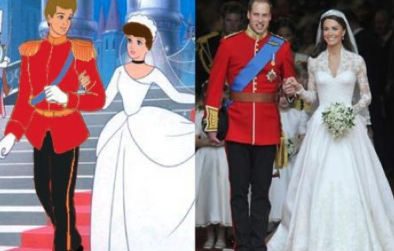

Real Life Cinderella, Kate Middleton
Did the “fairytale wedding” in a Disney’s Cinderella inspire Prince William and Kate Middleton?
Were Princesses Beatrice and Eugenie‘s controversial costumes an homage to Cinderella’s wicked
stepsisters?
A prankster with some design skills released this side-by-side comparison of the royal wedding and
the animated 1950 version.